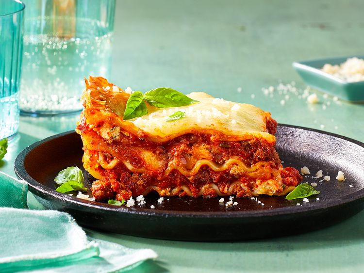

Kim's Lasagna Recipe

Description
Kim’s Lasagna is a hearty, classic Italian-American dish made with layers of tender pasta, rich meat sauce, creamy ricotta, and melted mozzarella. Baked to golden perfection, this comforting favorite is ideal for family dinners or special gatherings.
Ingredients
- 12 lasagna noodles
- 1 pound ground beef
- 1 pound Italian sausage
- 2 cups ricotta cheese
- 3 cups shredded mozzarella cheese
- 1 cup grated Parmesan cheese
- 2 jars (24 oz each) marinara sauce
- 2 cloves garlic, minced
- 1 teaspoon dried oregano
- 1 teaspoon dried basil
- Salt and pepper to taste
- Fresh basil for garnish (optional)
Directions
- Preheat the oven to 375°F (190°C).
- Cook the lasagna noodles according to package instructions. Drain and set aside.
- In a large skillet, cook the ground beef and Italian sausage over medium heat until browned. Drain excess fat.
- Add minced garlic, oregano, basil, salt, and pepper to the meat mixture. Stir in the marinara sauce and simmer for 10 minutes.
- Spread a thin layer of meat sauce on the bottom of a 9x13 inch baking dish.
- Layer 4 lasagna noodles over the sauce.
- Spread half of the ricotta cheese over the noodles, followed by
half of the meat sauce, and a third of the mozzarella cheese.
- Repeat the layers: noodles, ricotta, meat sauce, and mozzarella.
- Top with the remaining noodles, meat sauce, and the rest of the mozzarella and Parmesan cheese.
- Cover with aluminum foil and bake for 25 minutes.
- Remove the foil and bake for an additional 15 minutes,
or until the cheese is bubbly and golden.
- Let it cool for 10 minutes before slicing.
- Garnish with fresh basil if desired.
Home